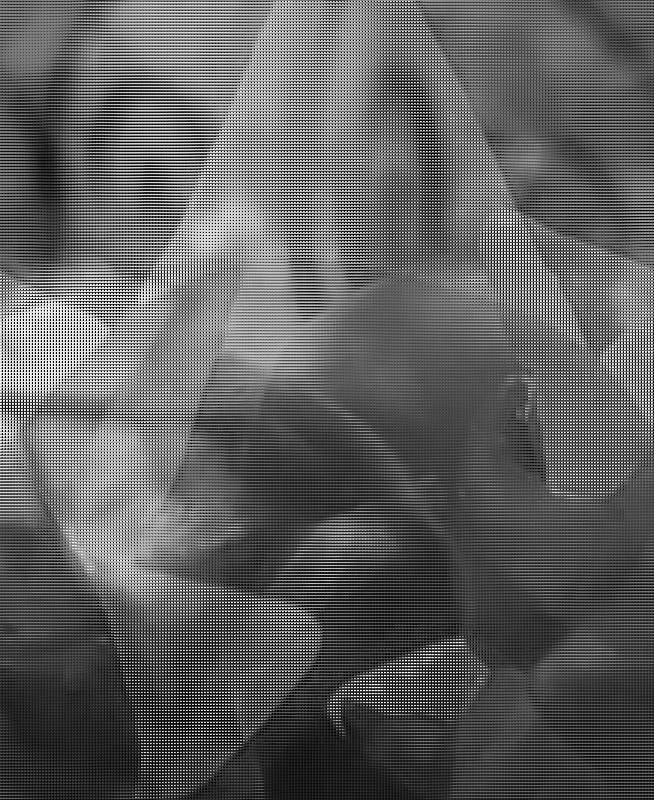

2026

This project explores digital image corruption and glitch aesthetics. The piece was created through intentional manipulation of image data to produce fragmented textures, distorted colors, and unexpected visual results. This image was made using TextEdit, by experimenting with the image code through deleting, copying & pasting, and adding random letters, numbers, and various randomized code. The original image was of a toy figure of the character "Ashley", from the game series "Wario Ware". What do you see now?